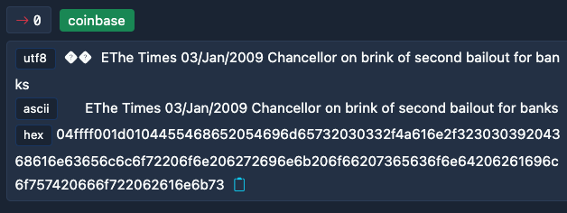
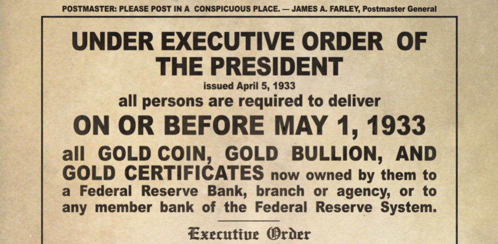

Versteckte Hinweise von Satoshi Nakamoto
Veröffentlicht am: 30. September 2024
Die Nachricht im ersten Bitcoin Block
Der erste Bitcoin Block, auch Genesis-Block genannt, welcher am 09.01.2009 von Satoshi Nakamoto selbst gemined wurde, war die erste Transaktion im Bitcoin Netzwerk. Satoshi erhielt für diesen Block 50 BTC als Belohnung, doch diese können nicht ausgegeben werden. Jeder Versuch, diese Bitcoin auszugeben würde vom Netzwerk abgelehnt werden.
In diesem ersten Block des Netzwerks hat Satoshi eine interessante Nachricht versteckt: "The Times 03/Jan/2009 Chancellor on brink of second bailout for banks"
Dies ist die Überschrift der am 03.01.2009, also 6 Tage vor dem Block, erschienen Ausgabe der "The Times". In diesem Artikel geht es darum, dass überlegt wird, ein zweites "Bailout", also eine finanzielle Rettung der Banken nach der Finanzkrise einzuleiten.
Hiermit zeigt Satoshi auf, warum die Menschen ein hartes Geld wie Bitcoin brauchen und wie kaputt das Fiat-Geldsystem ist.
Der Reformationstag
Das Bitcoin-Whitepaper, welches die grundlegende Funktionsweise von Bitcoin erklärt, wurde am 31. Oktober 2008 in einer Mailing Liste veröffentlicht.
Ebenfalls am 31. Oktober, allerdings knapp 491 Jahre vorher, nagelte Martin Luther die 95 an eine Kirchentür, welche die Reformation der Kirche einleitete.
Ob Satoshi dieses Datum als Veröffentlichung seiner "These" rein zufällig oder mit Absicht gewählt hat, ist natürlich unklar. Wie es auch gewesen ist, Satoshi hat mit der Erfindung von Bitcoin definitiv eine Reformation des Geldsystems und der Art, wie wir über Geld denken eingeleitet.
Sein Geburtsdatum
Satoshi war auch auf der Website P2PFoundation aktiv. Bei seinem Account dort, wurde als Geburtsdatum der 05. April 1975 angegeben.
Wir können mit ziemlicher Sicherheit sagen, dass dieses Datum nicht der echte Geburtstag von Satoshi ist, da er im Allgemeinen sehr auf die Verschleierung seiner wahren Identität geachtet hat.
Möglicherweise liegt der Grund für dieses Datum in einer politischen Motivation im Zusammenhang mit der Executive Order 6102, welche im Jahre 1933 vom damaligen US-Präsendenten Roosevelt erlassen wurde.
Diese Anordnung verpflichtete Privatpersonen und Unternehmen in den Vereinigten Staaten, fast ihren gesamten Goldbesitz an die Federal Reserve zu verkaufen. Sie zielte darauf ab, die Wirtschafts- und Bankenkrise während der Weltwirtschaftskrise zu bekämpfen.
Durch die Verstaatlichung des Goldes wollte die Regierung die Geldmenge kontrollieren und den Dollar abwerten, um die Deflation zu bekämpfen und die Wirtschaft anzukurbeln. Die Executive Order führte dazu, dass Goldbesitz über einem bestimmten Wert (damals 100 US-Dollar) illegal wurde, ausgenommen bestimmte Sammlermünzen oder Schmuck. Das Gold musste zu einem festen Preis von 20,67 US-Dollar pro Feinunze abgegeben werden. Später wurde der Goldpreis durch den Gold Reserve Act von 1934 auf 35 US-Dollar pro Feinunze erhöht, was einer signifikanten Abwertung des US-Dollars entsprach.
Woher stammt sein Name?
Satoshi Nakamoto - dieser Name ist in Japan nichts ungewöhnliches. Der Vorname ist weit verbreitet und ein üblicher Vorname für Männer.
Der Nachname ist weniger verbreitet, aber dennoch nicht unüblich. Vermutlich hat sich Satoshi bewusst für diesen Namen entschieden, um seine Anonymität zu wahren.
Fun-Fact: Ash Ketchum aus Pokemon heißt in der japanischen Version auch "Satoshi"
Fazit
Satoshi Nakamoto hat bei der Schaffung von Bitcoin und seiner Kommunikation viele bemerkenswerte Details und symbolische Hinweise berücksichtigt. Ob es das Datum der Veröffentlichung des Whitepapers am Reformationstag war, die Nachricht im Genesis-Block, die auf die Schwächen des bestehenden Finanzsystems hinwies, oder das bewusst gewählte Geburtsdatum, das mit der Verstaatlichung von Gold in den USA verknüpft ist – all dies zeigt eine tiefe Kenntnis historischer, wirtschaftlicher und gesellschaftlicher Zusammenhänge. Diese sorgfältigen Hinweise verdeutlichen, dass Satoshi nicht nur ein brillanter Entwickler, sondern auch ein außergewöhnlich reflektierter Mensch gewesen sein muss, der den Wandel, den Bitcoin hervorrufen sollte, genau durchdacht hat.